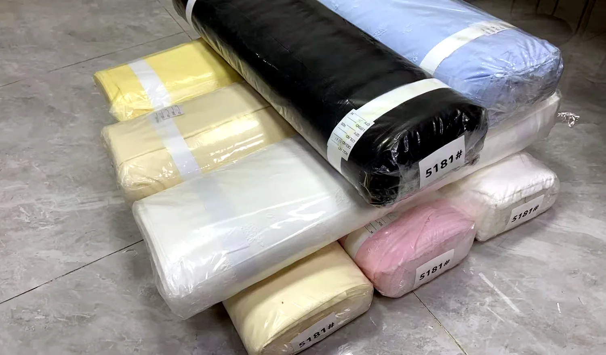
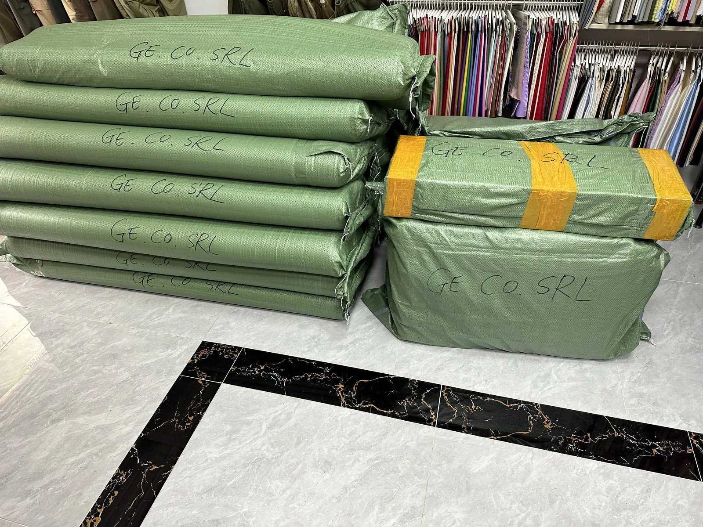
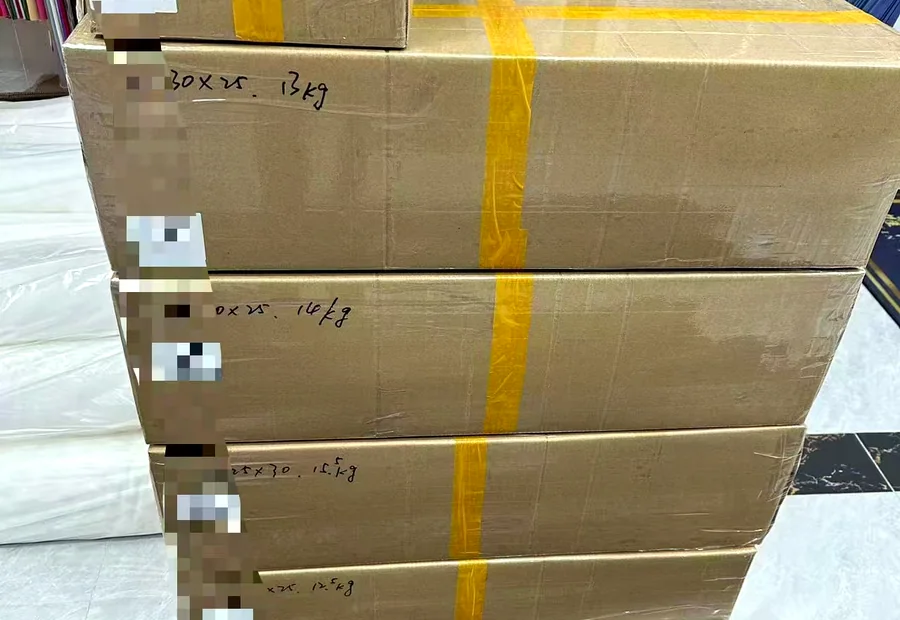
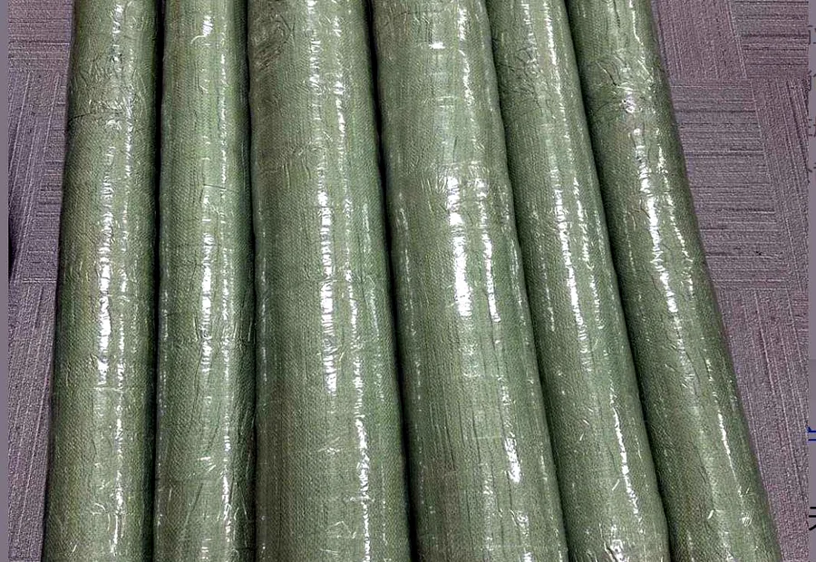
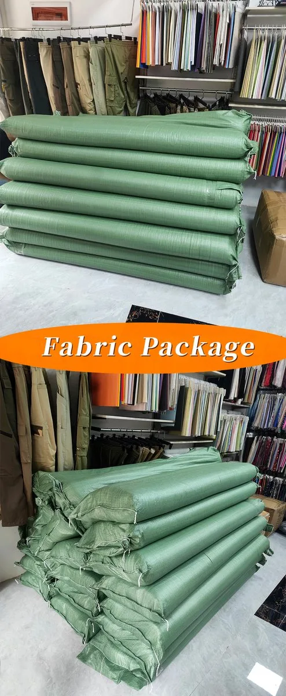

Roll packing
Fabric rolls and bundles can be grouped for inspection, storage and order handling.
Packing and shipment readiness
YAQIXIN keeps roll packing, polybag protection, carton marks and shipment preparation visible so overseas buyers can confirm practical delivery details before dispatch.



Shipment proof
Packing details
Useful for wholesalers, apparel brands, importers and sourcing teams checking fabric order handling beyond product photos.
Fabric rolls and bundles can be grouped for inspection, storage and order handling.

Wrapped rolls help keep fabrics clean during packing, handover and delivery preparation.

Carton marks and packing requirements can be confirmed before shipment.

Long rolls can be grouped and protected for wholesale delivery planning.
Export order support
YAQIXIN can discuss fabric roll length, polybag protection, carton marks, receiving requirements and delivery targets together with MOQ, production schedule and product category. This helps overseas buyers avoid unclear packing expectations after order confirmation.
Shipment gallery
These images help buyers review physical handling before asking for quotation documents or delivery planning.





FAQ
Short answers for searches around fabric roll packing, export carton preparation and wholesale fabric shipment support.
Yes. Carton marks and packing requirements can be discussed before dispatch, especially for bulk fabric orders.
Share destination market, receiving warehouse needs and order quantity so the team can confirm a practical route.
Send packing and delivery targets with your inquiry so they can be considered together with MOQ and price logic.
Send fabric type, quantity, destination market and any packing requirements before quotation.